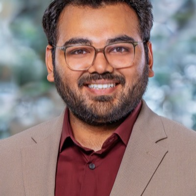
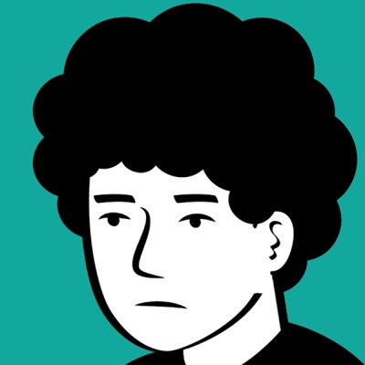
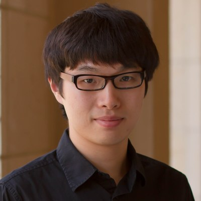

Efficient Foundation Models
for Real-Time Embodied AI
Making robot foundation models fast enough, cheap enough, and safe enough to actually deploy.
Overview
Embodied foundation models are now good enough to matter. Most of them still miss the latency, memory, and power budgets required to run on the robot itself. This workshop is about that gap: what it actually takes to make an embodied model general, fast, and deployable on real hardware rather than in a datacenter.
This is for you if you work on compression, quantization, distillation, adaptive compute, action chunking, hardware-aware design, edge-cloud systems, or safety and control under timing constraints, whether you build vision-language-action policies, world-action models, or something that does not fit either label. Submissions are non-archival and close October 12.
Why now
RT-2's 55B parameters run at 1 to 3 Hz on cloud TPUs that cost more than the robot. OpenVLA reports roughly 6 Hz on an RTX 4090, and that is a desktop GPU rather than anything that rides onboard. Dexterous manipulation generally wants closed-loop rates well above what these policies deliver, and while some systems close that gap with a fast low-level servo loop under a slower policy, the policy rate still bounds how quickly the robot can change its mind. Meanwhile humanoid programs at scale (Tesla Optimus, Agility Digit, Unitree G1) make per-unit inference cost a first-order constraint: on platforms where the robot costs less than a datacenter GPU, onboard compute is a budget rather than a preference.
| Model | Params | Hardware | Reported figure | Measures |
|---|---|---|---|---|
| Action policies | ||||
| RT-2 | 55B | Cloud TPU | 1–3 Hz | closed-loop control |
| OpenVLA | 7B | RTX 4090 | ~6 Hz | throughput |
| π0 | 3.3B | — | 50 Hz | open-loop chunk rate |
| TinyVLA | 0.7–1.3B | RTX A6000 | 20× vs OpenVLA | relative latency |
| OpenVLA-OFT | 7B | A100 | 109.7 Hz (LIBERO) | throughput |
| MiniVLA | 1B | L40S | 12.5 Hz | throughput |
| HyperVLA | 90× fewer active | L4 | 482→4 ms/step | relative latency |
| BitVLA | 1.58-bit ternary | — | 11× vs OFT | relative memory |
| World models | ||||
| DreamDojo | 2–14B | RTX 5090 | 10.8 FPS | offline rollout |
| DreamZero | 14B | GB200 | 7 Hz | closed-loop control |
The last column is the point: these numbers measure different things on different hardware, so they cannot be ranked against each other. Building an evaluation that can is one of the things we want papers about.
General
One policy across tasks, objects, and embodiments, rather than a model per skill.
Fast
Closed-loop rates that keep up with contact-rich manipulation.
Deployable
Inside a fixed onboard power, memory, and cost budget, not merely running somewhere.
Systems trade these off differently, and few manage all three at once. Speed and deployability pull apart in particular, because raw Hz can be bought with bigger hardware: OpenVLA-OFT reaches 109.7 Hz, but on an A100 that will never ride on the robot.
What we want papers on
Architecture and compression
Smaller backbones, action chunking, quantization, pruning, distillation, and adaptive compute for policies and world models alike. Results reporting real latency, memory, energy, or control-rate gains on robot-relevant hardware are especially welcome, as is any evidence about whether these techniques compose.
Edge-cloud co-design
Deployment trade-offs across onboard, hybrid, and cloud setups, and across heterogeneous accelerators: GPUs, TPUs, Trainium and Inferentia, mobile NPUs. Total cost of ownership at fleet scale is close to unstudied.
Safety under latency
Interruption, fallback, and certification when inference is slow or its timing is variable. Action chunking commits a robot to open-loop execution with no principled way to interrupt it, and certifying systems with stochastic response time remains open.
Speakers
 JW
JW
DS
OAAdditional invited speakers will be announced here as invitations are confirmed.
Schedule
Roughly four hours, built around four interactive elements: live profiling on real Jetson hardware, a structured debate, the challenge results, and a roadmap working session. Talk segments are kept short. Slots marked to be announced are still being filled.
| Time | Session |
|---|---|
| 9:00 | Opening and framing Organizers frame the generality, speed, and deployability trilemma |
| 9:10 | Keynote, speaker to be announced 30 minute keynote, then 20 minutes live: organizers profile vanilla OpenVLA on a Jetson on stage, narrating memory and kernel bottlenecks |
| 10:00 | Lightning talks Five contributed papers, selected for method diversity |
| 10:30 | Coffee and posters All accepted papers; live demos welcome |
| 10:55 | Invited talk, speaker to be announced C3: certifiable safety under latency |
| 11:25 | Debate: the 1B ceiling, participants to be announced Oxford-style and moderated, with an audience vote before and after |
| 12:10 | Challenge results Top entries present, seven minutes each |
| 12:35 | Synthesis: roadmap working session Organizer-facilitated, feeding the post-workshop report |
| 12:55 | Best paper and closing |
Call for Papers
We solicit four-page extended abstracts, plus unlimited pages for references, on efficiency across the whole space of embodied foundation models: VLA policies, world-action models, and emerging architectures alike.
Topics
- Efficient architectures for VLA policies, world-action models, and emerging designs: action chunking, mixture-of-experts, early exit, diffusion and flow step-reduction
- Compression for robot foundation models: quantization, pruning, distillation
- Memory-efficient adaptation and fine-tuning
- Benchmarking methodology, including whether efficiency techniques compose
- Hardware-aware design across accelerators: GPU, TPU, AWS Trainium and Inferentia, mobile NPUs
- Edge-cloud hybrid architectures for robot fleets
- Safety and latency trade-offs, and fallback policies under stochastic response time
- Efficient world models for online planning and real-time safety monitoring
Submission
Four pages plus unlimited references, hosted on OpenReview, reviewed double-blind. Submissions must be anonymized.
Non-archival. Accepted papers are not archived as formal publications, so submitting here does not affect your ability to submit the same work to a main conference. Concurrent submissions and work under review elsewhere are permitted. Previously published work that fits the scope is also eligible, tracked and reviewed separately from new work.
Submission portal: the OpenReview venue request is submitted and pending approval. The link will appear here as soon as the venue is live.
Review and presentation
We aim for three reviews per submission, from the organizing committee and an invited program committee, subject to reviewer availability. All accepted papers are presented as posters, and roughly five are additionally selected for a five-minute lightning talk.
Embodied Efficiency Challenge
A benchmarking competition producing a concrete, citable artifact. The task is to compress a reference policy until it fits a real onboard budget without losing the capability that made it worth deploying.
- Reference model
- OpenVLA-7B with a frozen evaluation harness. About 14 GB in bf16, which does not fit a 16 GB Jetson, so quantization, sharding, or offload is required.
- Target budget
- Jetson Orin NX (16 GB) class hardware. Teams run on their own device.
- How it works
- We release a reference Docker container and evaluation script. You run it on your hardware and submit code, reported metrics, and a hardware attestation. Organizers re-run the top entries to verify before results are announced, so the leaderboard is reproducibility-checked rather than centrally hosted.
- Tasks
- LIBERO Spatial, Object, and Goal suites.
- Metrics
- Success rate first, within 15 points of the published reference. Then median and p99 latency per action. Then parameters and peak memory.
- Open to all
- The compress-to-a-budget methodology is architecture-agnostic. World-model and emerging-architecture entries are explicitly welcome.
- Artifact
- All submissions, baselines, and the harness become
embodied-efficiency-bench, a permanent open-source resource. - Recognition
- Best Efficiency Award and a presentation slot. Travel grant subject to sponsorship.
Important Dates
- September 25
- Challenge harness and reference container released
- October 12
- Paper submission deadline
- October 26
- Paper acceptance notification
- October 23
- Challenge submission deadline
- November 5
- Challenge results verified and announced
- November 12
- Workshop, CoRL 2026, Austin
All deadlines are 11:59 PM Anywhere on Earth.
Organizers

JYJWThe program committee is being formed and will be announced here shortly.